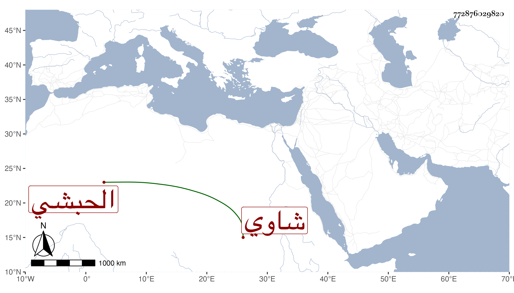

0902Sakhawi.DawLamic.ITO20230111-ara1.EIS1600.772876029820
Biography ID: 772876029820
317
جوهر صفي الدين الارغوني شاوي الحبشي . خدم بعد موت أستاذه في حدود سنة ثلاث وثلاثين عند الظاهر جقمق وهو أميراخور وسافر معه في بعض سفراته إلى البلاد الشمالية فلما تسلطن جعله ساقيا وعظم قدره في الدولة وصارت له كلمة مسموعة مع عقل وأدب وسيرة حسنة مع الناس ثم صار بعد موته رأس نوبة الجمدارية فزادت بذلك عظمته ولم يزل على ذلك حتى مات في شعبان سنة سبعين ودفن من الغد بتربة قانباي الجركسي وحضر السلطان الصلاة عليه بمصلى المؤمني وهو في عشر الستين ولم يخلف بعده مثله دينا وأدبا وحشمة ورياسة وتواضعا وعقلا مع محبته في العلماء والصالحين وكتابة للمنسوب وفضيلة في الجملة رحمه الله وإيانا . )
